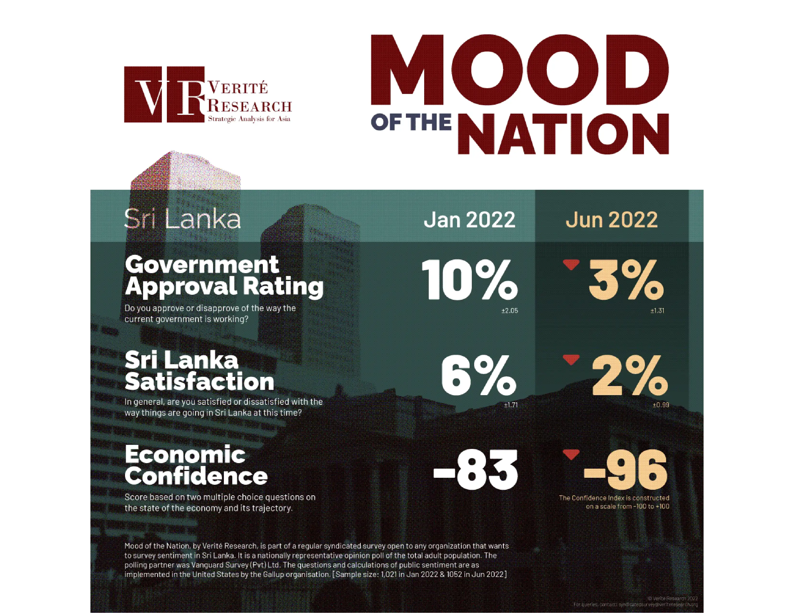
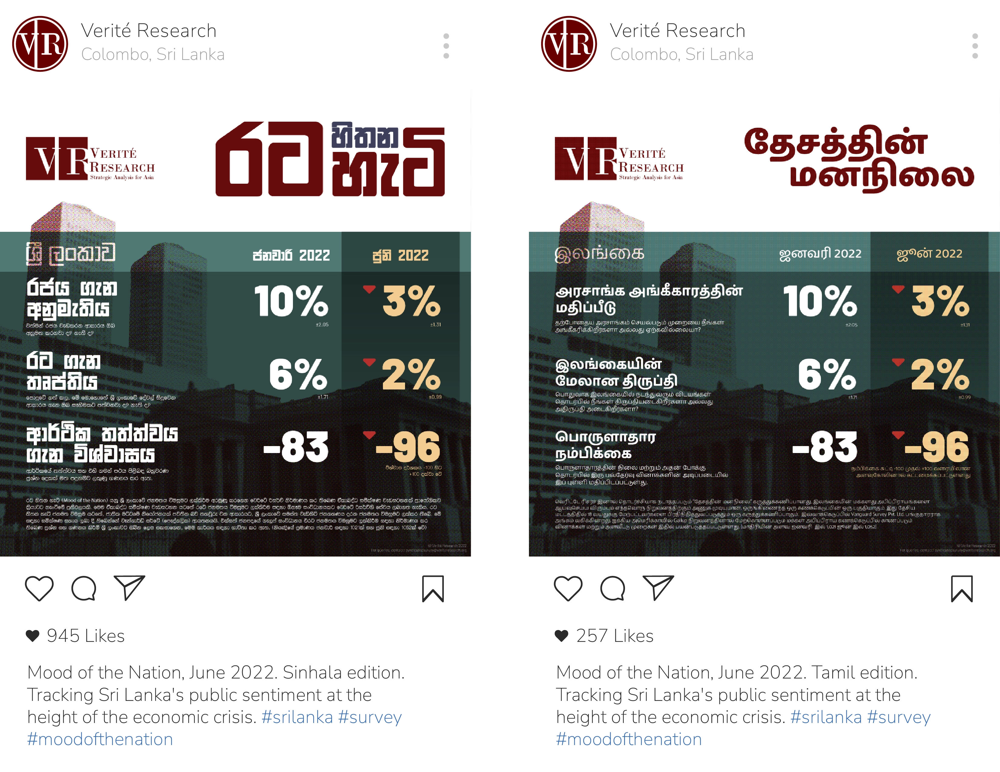
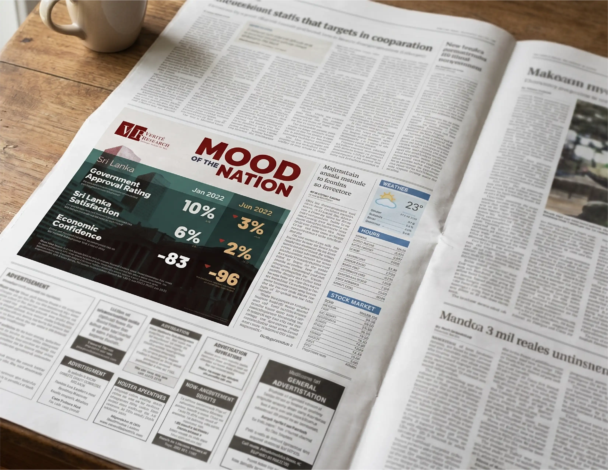

Mood of the Nation
Tracking government approval ratings, national satisfaction, and economic confidence across Sri Lanka.

“To the question, 'In general, are you satisfied or dissatisfied with the way things are going in Sri Lanka?' only 2% said they were satisfied.”

